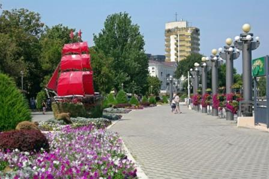
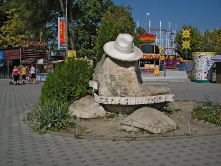
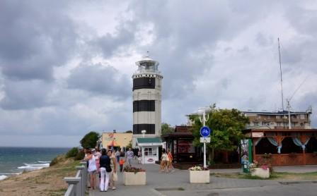

Достопримечательности Анапы

Набережная
Пожалуй, это первое место, куда отправляются все гости города-курорта. На набережной можно гулять днем и ночью, не только летом, но и зимой. Подышать морским воздухом, освежиться бризом, полюбоваться прекрасными видами моря. Многочисленные кафе, парки аттракционов, океанариумы и террариумы, карусели, колесо обозрения, передвижные цирки — на любой вкус и кошелек..

Белая шляпа
«Надену я черную шляпу, поеду я в город Анапу» — поется в старой песенке. Вот и сделали шляпу, только белую, символом города. Весит такая шляпка немало — 300 кг!

Анапский маяк
Маяк в Анапе — излюбленное место романтических встреч горожан и гостей города. Первые упоминания о постройке сооружения относятся к концу XIX века. Нынешний свой вид маяк приобрел после реконструкции в 1955 году — он сильно пострадал в годы Великой Отечественной войны.
Со смотровой площадки маяка открываются удивительные виды на море и горы Кавказа. Каждый приезжающий в город считает своим долгом посетить это уникальное архитектурное сооружение и принять участие в увлекательном занятии — кинуть монетку с самой высоты в море. Высота маяка — 43 метра. Здесь работают не только профессиональные фотографы, но и снимаются художественные киноленты.